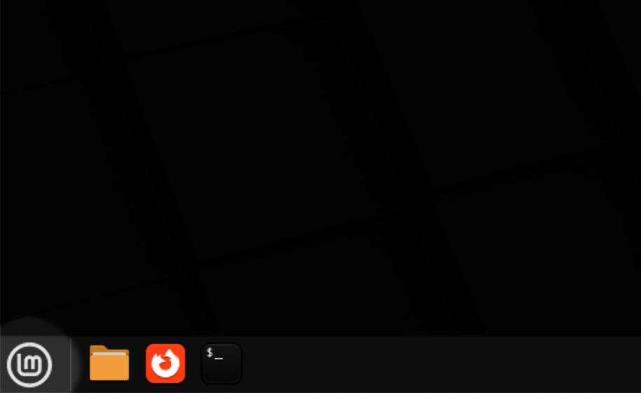
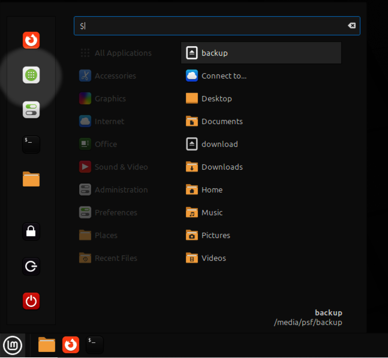
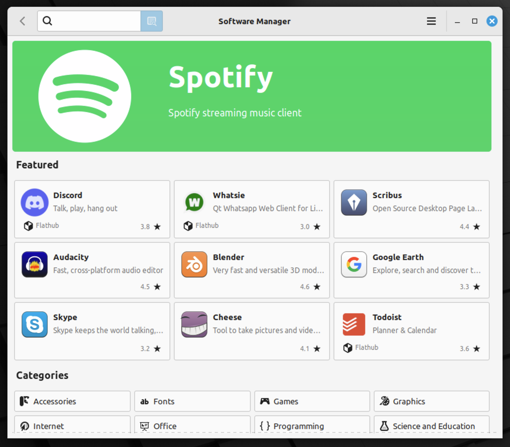
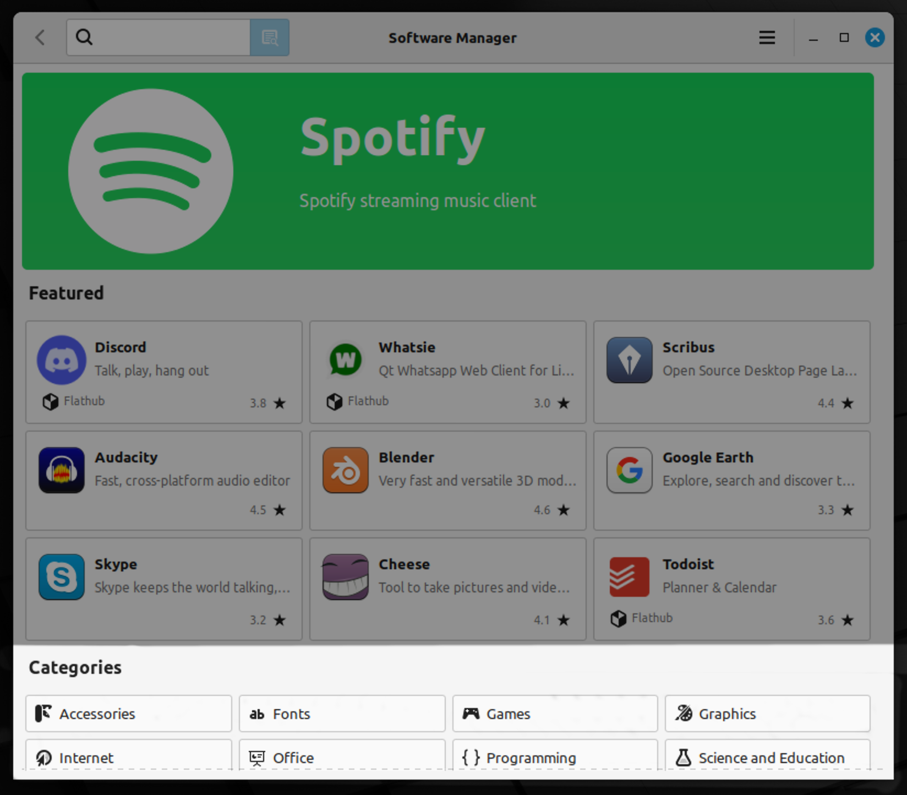
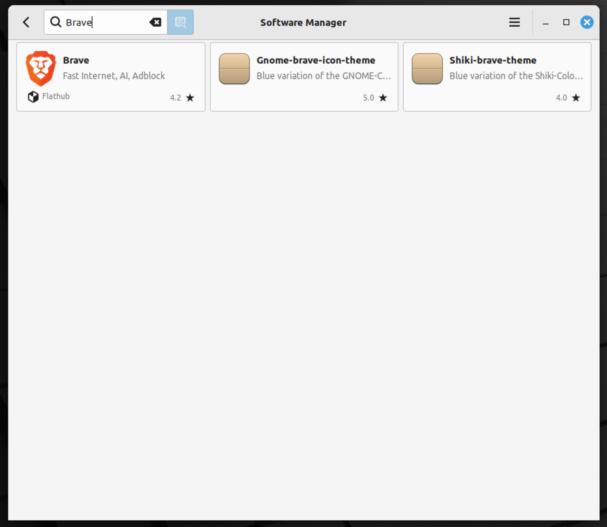
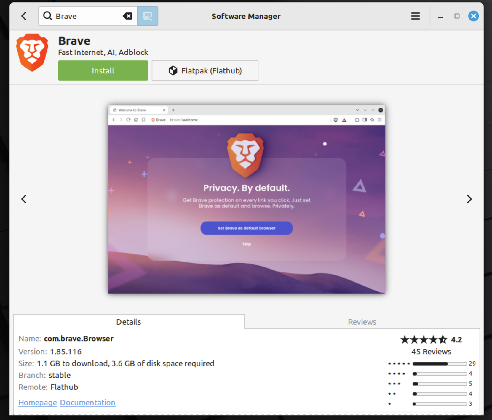
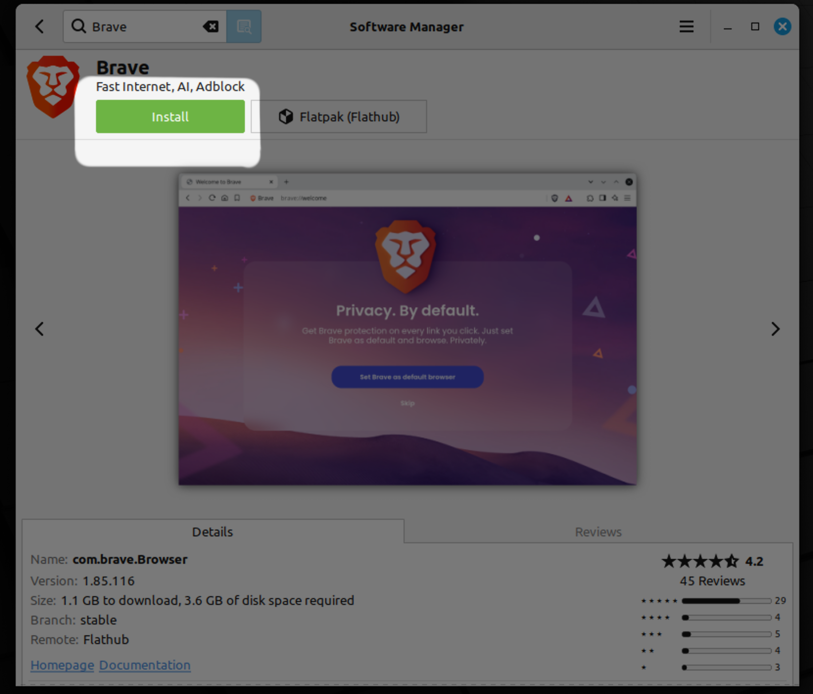
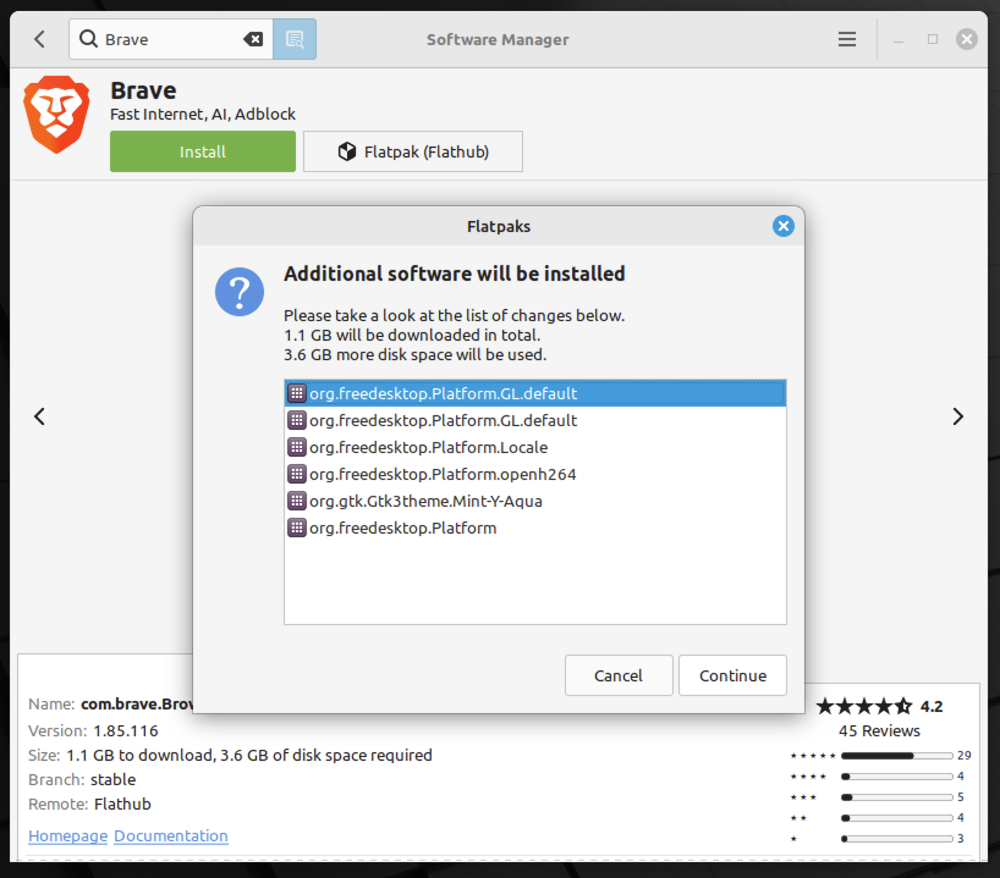
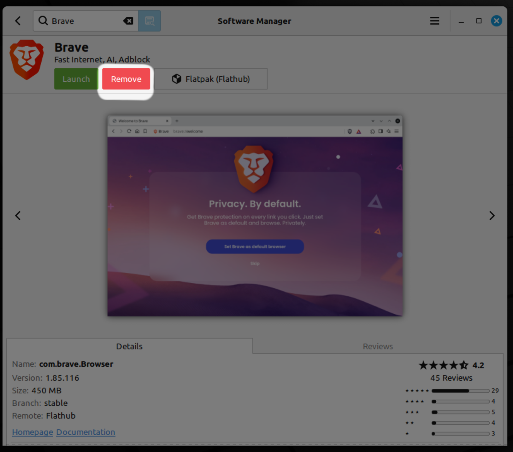

- Linux distribution based on Ubuntu and Debian
- Easy to use for Windows users
- Comes with a variety of pre-installed software
- Highly customizable
- Free and open-source
Bootable USB stick on Windows
- Use balenaEtcher to create a bootable USB stick from the Linux Mint ISO file.
- Restart your PC and press the appropriate key during startup to access the boot menu.
- Select the USB drive to boot from it.
- Follow the on-screen instructions to install Linux Mint and replace Windows.
USB boot stick on macOS
- Use balenaEtcher to create a bootable USB stick from the Linux Mint ISO file.
- Restart your Mac and hold down the Option (⌥) key during startup to access the boot menu.
- Select the USB drive to boot from it.
- Follow the on-screen instructions to install Linux Mint and replace macOS.
Install software on Linux Mint
- Open the "Software Manager" from the menu.
- Browse or search for the software you want to install.
- Select the software and click "Install".
- Authenticate with your password if prompted.
- Wait for the installation to complete.
1. Software Manager



2. Browse or search


3. Select and click "Install"




Advantage about Linux Mint and learnings
Linux Mint installlation
- Linux Mint is usage-friendly and easy to navigate, making it a great choice for beginners.
- Linux Mint is a great alternative to proprietary operating systems, promoting freedom and open-source software.
- The customization options allow users to tailor their desktop environment to their preferences.
Software Management
- The Software Manager provides a wide range of applications that can be easily installed and managed.
- Linux Mint offers a stable and reliable operating system with regular updates and support from the community.